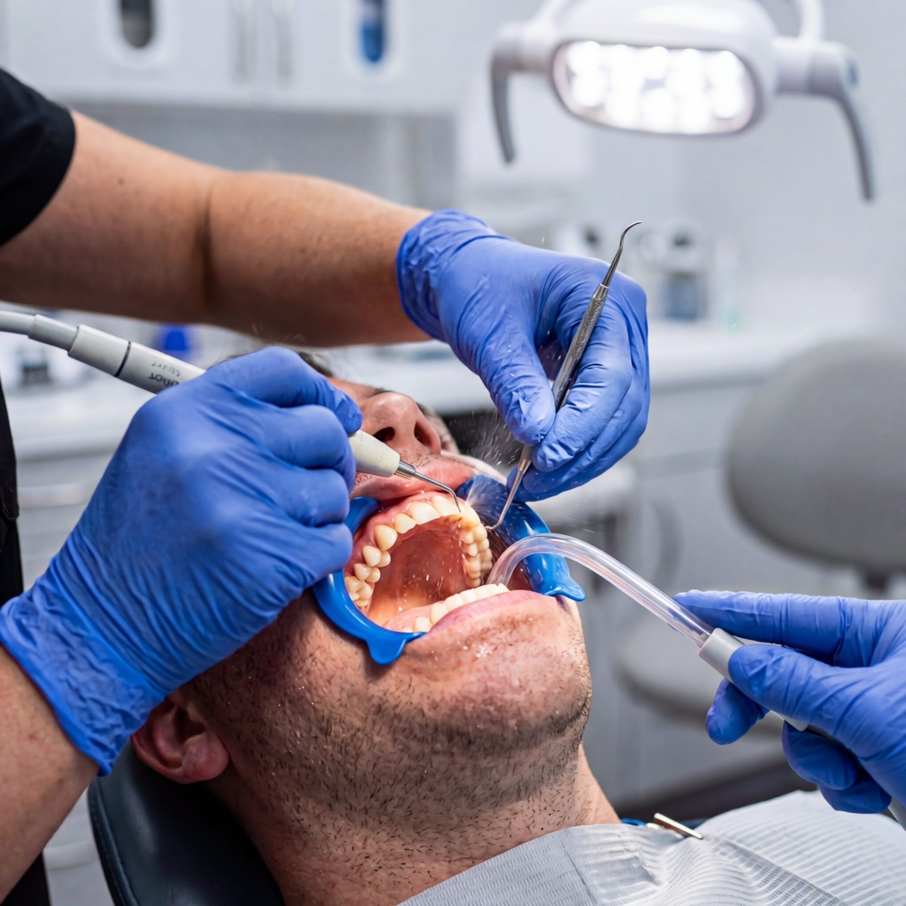
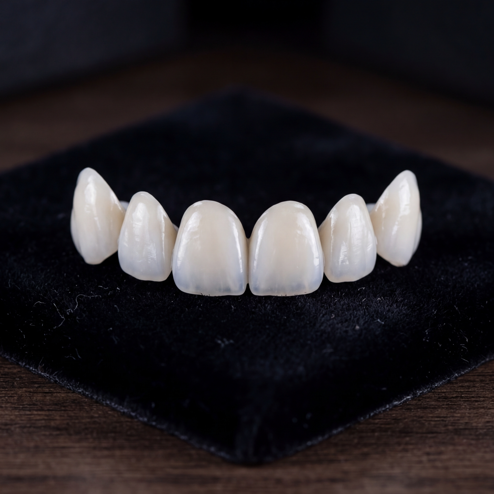
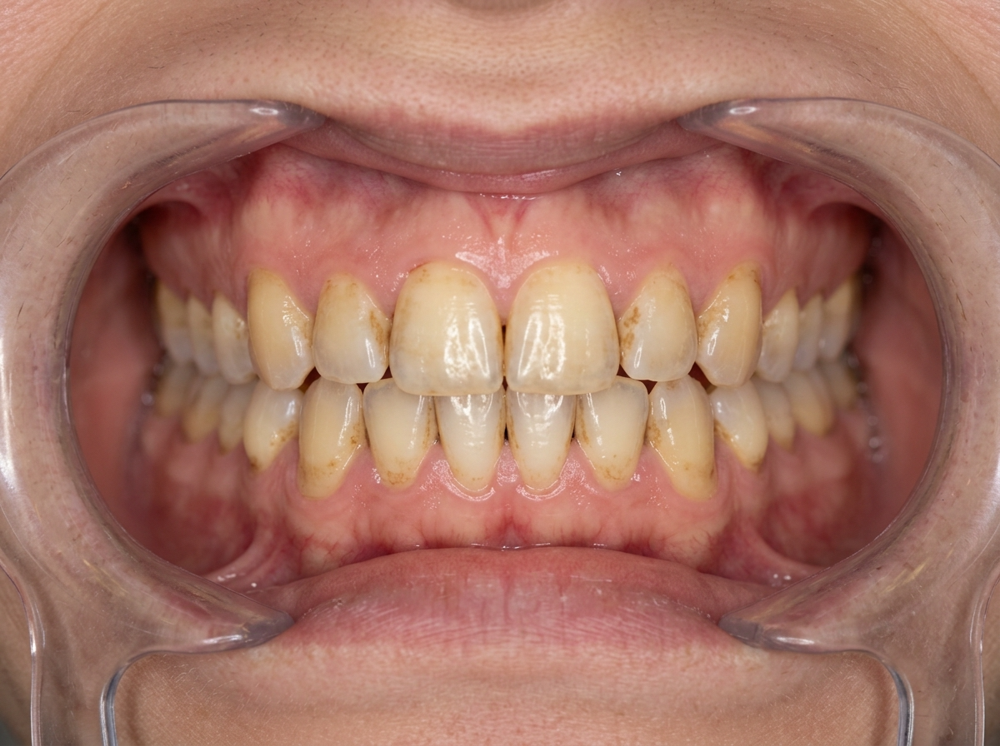
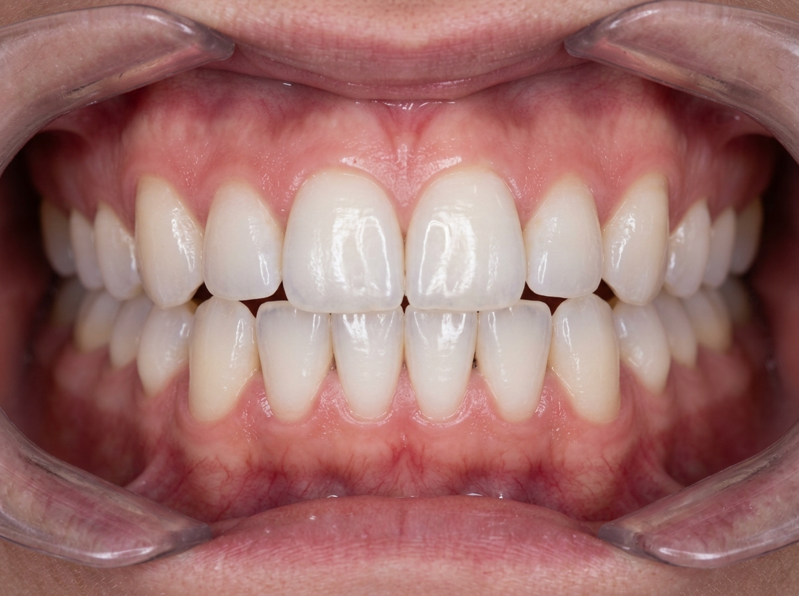

Sbiancamento ed estetica dentale
Trattamenti professionali per un sorriso più luminoso e armonioso, in totale sicurezza.
Trattamenti professionali per un sorriso più luminoso e armonioso, in totale sicurezza.

Sbiancamento professionale
Lo sbiancamento professionale utilizza gel a base di perossido di idrogeno o perossido di carbamide a concentrazioni controllate, applicati direttamente dal dottore o con mascherine personalizzate per l'uso domiciliare supervisionato.
Il trattamento alla poltrona si completa generalmente in una singola seduta di circa 60 minuti e permette di schiarire il colore dei denti di diverse tonalità. Prima dello sbiancamento è sempre consigliata una seduta di igiene professionale per rimuovere tartaro e macchie superficiali.

Estetica dentale
Le faccette dentali sono sottili lamine in ceramica o composito che vengono incollate sulla superficie esterna del dente per correggere forma, colore, dimensione o piccoli difetti di posizione. Sono una soluzione conservativa che richiede una preparazione minima del dente.
Il risultato è un sorriso naturale e armonioso. Le faccette vengono realizzate nel nostro laboratorio odontotecnico interno per un controllo ottimale della qualità estetica. Il team valuta ogni caso individualmente per consigliare il trattamento estetico più adatto.
Documentazione clinica
Un esempio di sbiancamento alla poltrona eseguito nel centro, con il consenso del paziente.


Trattamento con perossido di idrogeno in singola seduta di 60 minuti. Miglioramento di circa 4 tonalità sulla scala VITA.
Le immagini sono a scopo illustrativo. Il grado di sbiancamento ottenibile dipende dalle condizioni iniziali dello smalto e dalle abitudini del paziente. Documentazione pubblicata con il consenso informato del paziente ai sensi del GDPR.
Domande frequenti
No, se eseguito sotto supervisione professionale con concentrazioni adeguate. Lo smalto non viene danneggiato. È possibile una temporanea sensibilità che si risolve spontaneamente.
L'effetto può durare da diversi mesi a un paio d'anni, in base alle abitudini alimentari e di igiene. L'assunzione frequente di caffè, tè, vino rosso o fumo può ridurne la durata. Eventuali ritocchi mantengono il risultato nel tempo.
Le faccette in ceramica hanno una durata media di 10-15 anni con una corretta manutenzione. Richiedono una piccola preparazione del dente; il trattamento è quindi considerato irreversibile, ma i risultati estetici sono eccellenti.